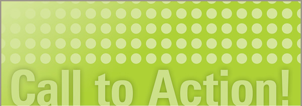
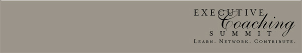

|  | |
We are close to having enough participants to move forward this year (it is not about cost, but about having what we consider to be a critical mass of participants), but we would like to see more interest among previous attendees. If you are planning to come to this year's Summit and have not yet submitted and application (you are automatically eligible as a previous participant), we need to hear from you as soon as possible. We will be making a decision no later than the end of September about whether to go forward with this year's meeting. We now have 98 members on our LinkedIn group. A number of requests for feedback on the agenda of this year's meeting have received almost no responses. You have been a part of this community in the past, but very few are participating in discussions about our future, or have given any indication of an intention to attend this year. We are in our final drive to increase attendance at this year's Summit. We also remain committed to trying to engage potential attendees in co-creating our agenda prior to arriving at the Summit (in other words, now). |
Based on the feedback we have received, there will be:
If you have not signed up for the LinkedIn group and wish to remain involved in ECS, please sign up now. Once you are a member, we encourage you to participate in discussions about this year's Summit and about the future of ECS. The website for this year's Summit is www.ecs2009.com. There is an application form on the website (previous attendees need only fill in minimal information) and a way to pay for the summit through Paypal. Best wishes, The 2009 Planning Committee |
|  | |